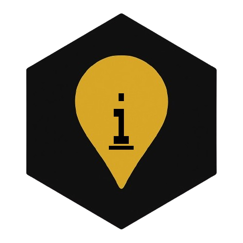

ZZX-LABS R&D // SOFTWARE
ImaGhee
ImaGhee is an image converter and rescaler GUI with batch presets, EXIF handling, and lossless and lossy compression modes, supporting PNG, JPEG, WebP, and TIFF conversions.
IMAGE // CONVERT // RESCALE
ImaGhee Workbench
PNGJPEGWEBPTIFF: NATIVE
Browser Canvas re-encoding normally omits source EXIF metadata. TIFF conversion remains in the native Pillow/FFmpeg build.